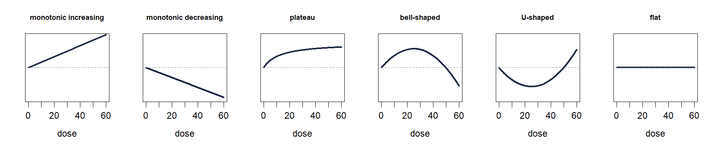

Fit it, then draw it
One call for the model, one for the picture, and a shape you had to name
The call: easydr()
library(easyDR) fit <- easydr(alcohol_cancer, sm = "RR", shape = "linear", dose.unit = "g/day", at = c(10, 25, 50)) fit
Eight prospective cohorts of alcohol intake and colorectal cancer, from Orsini and colleagues. Everything you need for the results paragraph prints from this one call.
| Argument | Does what |
|---|---|
| sm | The measure, and so the columns, the covariance and the scale. |
| shape | Required. No default and no guess. |
| at | Doses to report effects at. Five across the range if you say nothing. |
| dose.unit | A label. It changes no number. |
| method.tau | REML by default; ML, mm and fixed available. |
| proc | Two-stage by default; one-stage for sparse tables. |
| common, random | Which model to fit, not which to display. |
An
RR of 1.006 per 1 g/day does not mean drinkers run
1.006 times the risk. Each gram per day multiplies the risk by about
1.006, measured against the reference dose. easyDR prints that
reference every time, because moving it moves every predicted
effect.
The five shapes you can name
| shape | Fits | Terms |
|---|---|---|
| "linear" | a straight line through the dose | 1 |
| "log" | a straight line through log dose | 1 |
| "quadratic" | dose and dose squared | 2 |
| "rcs" | a restricted cubic spline; knots places them | 2+ |
| "fp" | a fractional polynomial; powers chooses the pair | 2 |
The shape is a claim about the biology, so it belongs in your protocol with a reason beside it: the dose range your readers care about, whether a threshold or a flattening is plausible here, what comparable reviews fitted. easyDR has no default and ranks nothing. Leave the argument out and the error lists what you may write.
easydr(alcohol_cancer, sm = "RR")
A shape with more than one term prints a departure-from-linearity test, which a straight line cannot, and prints no single slope, because no single number describes a curve.

easydr() applies
one and prints it as Curve shape:.Draw it: easydr_curve()
It takes the object easydr() returned. The fit computed
every number on the picture; these arguments choose what appears and
how.
# the defaults easydr_curve(fit) # titled, labelled, pinned, with the prediction band easydr_curve(fit, main = "Alcohol and colorectal cancer", xlab = "Alcohol intake (g/day)", ylab = "Risk ratio", ylim = c(0.9, 1.8), round = 2, prediction = TRUE) # the corner box off, if the caption carries the numbers easydr_curve(fit, result = FALSE)
| Argument | Does what |
|---|---|
| main | Title. FALSE draws none. |
| xlab, ylab | Axis labels; written from the fit if left out. |
| xlim, ylim | Limits on the reported scale, so c(0.9, 1.8) for a ratio. |
| round | Digits beside each marked dose. NULL marks without labelling. |
| prediction | TRUE adds the prediction band, when the fit has one. |
| points | Marks the doses named in at. |
| reference | Null line, and the reference dose. |
| rug | Ticks the doses the fit reports along the bottom. |
| result | The box in the corner: the effect, its interval, its p value and I2. |